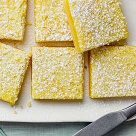
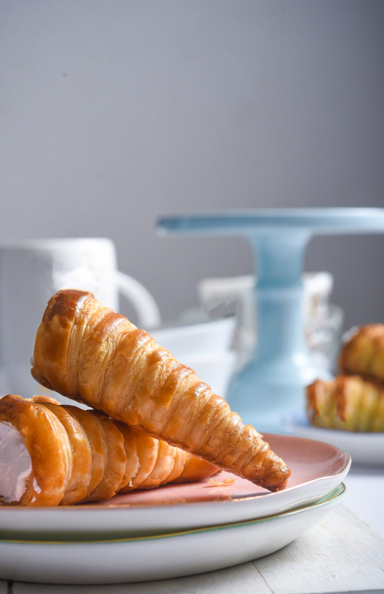

Dessert Recipes
Banana Chesse Cake

"Description"
There is a nostalgia in the cream rolls. For a very long time, these cones of flaky pastry filled with cream ruled the Indian bakeries. Today you will find a thousand options to choose from, as the bakeries are packed with new products influenced by the western market. But there was a time only fewer items were seen on the shelves of glass cased display of bakeries.
Ingredients
- 2 cups finely crushed graham cracker crumbs
- 1/2 cup(4 ounces) unsalted butter, melted
- 1/4 cup granulated sugar
Steps
- Gather the Ingredients. Preheat the oven to 350 F.
- In a large bowl, combine the crushed graham crackers, melted butter, and granulated sugar.
- Pat the crust mixture into the bottom and halfway up the sides of a 10-inch springform pan. To prevent leaks, line the outside of the pan with aluminum foil or place the springform pan on a rimmed baking sheet.
- Make the filling. In a large bowl, beat the cream cheese, sugar, sour cream, eggs, mashed bananas, and lemon juice until smooth.
- Pour the mixture into the prepared pan and bake for 1 hour, or until the cheesecake is light brown on top.
- Cool completely at room temperature. Wrap in plastic wrap and chill for at least 12 hours before serving.
- Garnish individual servings with whipped cream, fresh banana slices, and a dusting of ground cinnamon. Serve and enjoy.
Homemadde Cream Rolls

"Description"
What's more American than blue jeans and baseball? Well, we'd like to think these classic American desserts are up there on the list of all-American standouts. From old fashioned banana splits to New York cheesecake, these uniquely American desserts go beyond just apple pie (but don't worry, we included it too). Find all the best American desserts with roots right here in the U.S. — you just might learn a little American history along the way!
Ingredients
- puff pastry sheet as required
- 8 tale spoon milk
- 2 cup unsalted butter
- 2 cup powdered sugar
- 2 teaspoon vanilla essence
Steps
- Cut puff pastry sheet into strips
- Shape and bake the pastry rolls
- Let the cooked pastry rolls cool
- Prepare teh cream filling
- Fill the pastry roll with prepared cream
- Seve your homemade Cream Roll!
Banana Chesse Cake
"Description"
What's more American than blue jeans and baseball? Well, we'd like to think these classic American desserts are up there on the list of all-American standouts. From old fashioned banana splits to New York cheesecake, these uniquely American desserts go beyond just apple pie (but don't worry, we included it too). Find all the best American desserts with roots right here in the U.S. — you just might learn a little American history along the way!
Ingredients
- 2 cups finely crushed graham cracker crumbs
- 1/2 cup(4 ounces) unsalted butter, melted
- 1/4 cup granulated sugar
Steps
- Gather the Ingredients. Preheat the oven to 350 F.
- In a large bowl, combine the crushed graham crackers, melted butter, and granulated sugar.
- Pat the crust mixture into the bottom and halfway up the sides of a 10-inch springform pan. To prevent leaks, line the outside of the pan with aluminum foil or place the springform pan on a rimmed baking sheet.
- Make the filling. In a large bowl, beat the cream cheese, sugar, sour cream, eggs, mashed bananas, and lemon juice until smooth.
- Pour the mixture into the prepared pan and bake for 1 hour, or until the cheesecake is light brown on top.
- Cool completely at room temperature. Wrap in plastic wrap and chill for at least 12 hours before serving.
- Garnish individual servings with whipped cream, fresh banana slices, and a dusting of ground cinnamon. Serve and enjoy.